The original, as published: DoITPoMS, University of Cambridge, Batteries. CC BY-NC-SA 4.0, https://creativecommons.org/licenses/by-nc-sa/4.0/. As published, from https://www.doitpoms.ac.uk/tlplib/batteries/ https://www.doitpoms.ac.uk/tlplib/batteries/
Electrical energy/power storage has widespread applications as can be seen in the sheer range and diversity of batteries used as a source of electrical power. Batteries range from tiny button cells storing miliwatthours of energy and delivering microwatt power, to gigantic load levelling batteries situated within a factory size building, storing megawatthours of energy and delivering megawatts of power.
Different metals (and their compounds) have different affinities for electrons. When two dissimilar metals (or their compounds) are put in contact through an electrolyte, there is a tendency for electrons to pass from one material to another. The metal with the smaller affinity for electrons loses electrons to the material with the greater affinity, becoming positively charged. The metal with the greater affinity becomes negatively charged. A potential difference between the two electrodes is thus built up until it balances the tendency of the electron transfer between the metals. At this point the potential difference is the equilibrium potential: the potential at which the net flow of electrons is 0.
The electrochemical series represents the quantitative expression of the varying affinity of materials relative to each other. In an aqueous electrolyte the standard electrode potential for an electrode reaction is expressed with respect to a reference electrode. Conventionally this is the H2/H+ cell, with reaction:
H+ + e
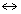
½ H2A battery is an electrochemical cell that converts chemical energy into electrical energy. It comprises of two electrodes: an anode (the positive electrode) and a cathode (the negative electrode), with an electrolyte between them. At each electrode a half-cell electrochemical reaction takes place, as illustrated by the animation below.
Electrode 1 is an anode: the electrode is oxidised, producing electrons. Electrode 2 is a cathode: the electrode is reduced, consuming electrons. In the fully charged state, there is a surplus of electrons on the anode (thus making it negative) and a deficit on the cathode (thus making it positive). During discharge, electrons therefore flow from the anode to the cathode in the external circuit and a current is produced. Therefore in simple terms batteries work as electron pumps in the external circuit, preferably with only ionic current flowing through the electrolyte. The electrical potential difference between the cathode and the anode, which can drive the electrons in the external circuit, is called electromotive force (emf). Once all the active material at the cathode has been reduced, and/or all the active anodic material is oxidised, the electrode has effectively been used up, and the battery cannot provide any more power. It can then be either disposed of or preferably recycled if it is a primary battery, or recharged if it is a rechargeable (secondary) battery.
If the anode were zinc and the cathode were copper the half reactions would proceed as follows:
At the anode: Zn → Zn2+(aq) + 2e– Eo = 0.76V
At the cathode: Cu2+(aq) + 2e– → Cu Eo = 0.34V
Thus the total potential for this cell is 1.10 V.
During use as a battery, discharge leads to dissolution of Zn at the anode and the deposition of Cu at the cathode. Such a cell is embodied in the Daniell Cell introduced in 1836. As a practical cell this required two electrolytes (typically zinc sulfate and copper sulfate aqueous solutions) to avoid polarisation. The electrolytes are separated from each other by a salt bridge or a porous membrane, which allows the sulfate ions to pass and carry the ionic current, but blocks metallic ions. The Daniell Cell is an effective battery but not practical for portability. More recently, however, the idea of using two separate electrolytes has been resurrected in the form of redox batteries.
When the cell potential is depleted the battery can be recharged. When a current is applied to the cell in the opposite direction the anode becomes the cathode, and vice versa. Thus electrode 2 that was oxidised upon discharge is now reduced and the electrode 1 that was reduced is now oxidised so the electrodes are returned to their former state, ready to be discharged again.
This time the anode would be copper and the cathode would be zinc, and the half reactions would proceed as follows:
At the anode: Zn2+(aq) + 2e– → Zn Eo = -0.76V
At the cathode: Cu → Cu2+(aq) + 2e– Eo = -0.34V
The minimum potential required for charging will be 1.10 V, as this is the potential of the cell. In reality much higher potentials will be required to overcome the polarisation.
The overall reaction in the cell can be described by two half-cell reactions: one for the anode and one for the cathode.
The cathodic reaction can be represented as:
, Standard electrode potential:
where a is the number of moles of A etc.
The cathode is usually a metallic oxide or a sulfide, but oxygen is also used.
The anodic reaction can be represented as:
, Standard electrode potential:
The anode is generally a metal, which is electrochemically oxidised to form a metal ion which is soluble in the electrolyte.
The anode and the cathode are connected internally through an electrolyte, which is an ionic conductor, thereby providing the medium for transfer of charge as ions between the two electrodes. It is typically a solvent containing dissolved salts, acids or bases. The electronic conduction in the electrolyte should be negligible in order to avoid self-discharge by internal short-circuiting.
The overall reaction is given by:
The change in standard free energy, , is given by:
where is the standard cell potential
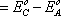
At conditions other than the standard state, E can be given as:
\[E = {E^o} - {{RT} \over {ZF}}\ln {{{{(aC)}^c}{{(aD)}^d}} \over {{{(aA)}^a}{{(aB)}^b}}}\] where (aC) is the activity of C etc.
This gives:
\[\Delta {G^o} = - nFE - {{nRT} \over F}\ln {{{{(aC)}^c}{{(aD)}^d}} \over {{{(aA)}^a}{{(aB)}^b}}}\]
The change in of a reaction is the driving force for a battery, which enables it to deliver electrical energy.
Thermodynamics can tell us the feasibility of a cell reaction occurring, and the theoretical cell voltage, however it is necessary to consider kinetics to gain a better idea of what the actual cell voltage may be, since rates of charge transfer are usually the limiting factor.
When a metal electrode is in an electrolyte, the charge on the metal will attract ions of opposite charge in the electrolyte, and the dipoles in the solvent will align. This forms a layer of charge in both the metal and the electrolyte, called the electrical double layer. The electrochemical reactions take place in this layer, and all atoms or ions that ore to be reduced or oxidised must pass through this layer. Thus, the ability to pass through this layer controls the kinetics, and is therefore the limiting factor when controlling the electrochemical reaction.
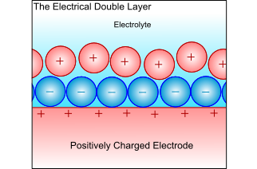
The rates of the chemical reactions are governed by the Arrhenius relationship:
Rate of reaction:
\[\alpha \exp \left( {{{ - \Delta G} \over {RT}}} \right)\]
where:
is the activation energy for the reaction
T is the temperature in Kelvin
R is the universal gas constant
In this case, the rate of the reaction can be measured by the current produced, since current is the amount of charge produced per unit time, and therefore proportional to the number of electrons produced per unit amount of time; i.e. proportional to the rate.
When an electrode is not at equilibrium an overpotential exists, given by
where η = overpotential, E = actual potential, Eo = equilibrium potential
Consider a general reaction for the oxidation of a metal at an anode:
M → Mz+ + ze–
The rate of this reaction, ka is governed by the Arrhenius relationship:
\[{k_a} = K\exp \left( {{{ - \Delta G} \over {RT}}} \right)\]
where K is the rate constant.
From Faraday’s law:
\[\eqalign{ & {i_o} = zF{k_a} \cr & {\rm{ }} = zFK\exp \left( {{{ - \Delta G} \over {RT}}} \right) \cr} \]
If an overpotential is now applied in the anodic direction, the activation energy of the reaction is reduced to \(\left( {\Delta G - \alpha zF\eta } \right)\), where α is the “symmetry factor” of the electrical double layer, usually 0.5.
Therefore
\[\eqalign{ & {i_a} = zFK\exp \left( {{{ - \left( {\Delta G - \alpha zF\eta } \right)} \over {RT}}} \right) \cr & {\rm{ }} = zFK\exp \left( {{{ - \Delta G} \over {RT}}} \right)\exp \left( {{{\alpha zF\eta } \over {RT}}} \right) \cr} \]
\[{i_a} = {i_o}\exp \left( {{{\alpha zF\eta } \over {RT}}} \right)\]
This is the Tafel equation.
By taking natural logs and rearranging, this can be written as:
\[\eta = \left( {{{RT} \over {\alpha zF}}} \right)\ln \left( {{{{i_a}} \over {{i_o}}}} \right)\]
\[\eta = {b_a}\log \left( {{{{i_a}} \over {{i_o}}}} \right)\]
Or, in terms of electrode potential,
\[\ln ({i_a}) = \ln ({i_o}) + (E - {E^o})\left( {{{\alpha zF} \over {RT}}} \right)\]
\[E = {b_a}\log \left( {{{{i_a}} \over {{i_o}}}} \right) + {a_a}\] , where ba is the anodic Tafel slope.
Similarly, we can consider the reduction of metal ions at a cathode:
Mz+ + ze– → M
The activation energy will be decreased by \(\left( {1 - \alpha } \right)zF\eta \) giving:
\[{i_c} = {i_o} + \exp \left( {{{\left( {1 - \alpha } \right)zF\eta } \over {RT}}} \right)\]
and
\[\eta = {{RT} \over {(1 - \alpha )zF}}\ln \left( {{{{i_c}} \over {{i_o}}}} \right)\]
Therefore
\(E = {b_c}\log \left( {{{{i_c}} \over {{i_o}}}} \right) + {a_c}\) , where bc is the cathodic Tafel slope.
The following is a typical Tafel plot – a plot of log io against E:
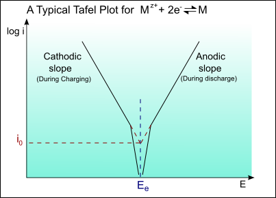
Thus for an applied potential, the current density can be found from the Tafel plot.
Example: Plotting Tafel curve of copper electrode.
At very high currents, a limiting current may be reached as a result of concentration overpotential, ηC(conc).
\[{\eta _C}(conc) = 2.303\left( {{{RT} \over {zF}}} \right)\ln \left( {{i \over {{i_L}}}} \right)\]
where iL is the limiting current (in this case for the cathodic double layer).
The limiting current is diffusion limited, and can be determined by Fick’s law of diffusion.
\[{i_L} = ZFD\left( {{C \over \delta }} \right)\]
where:
D = diffusion coefficient of Cu2+ in the electrolyte
C = concentration of Cu2+ in the bulk electrolyte
δ = the thickness of the double layer
Typical values would be:
D = 2 × 10-9 m2s-1
C = 0.05 × 104 kg m-3
δ = 6 × 10-4 m
which gives iL = 3.2 × 102 A m-2
A Tafel curve showing this diffusion limiting of the current is shown below:
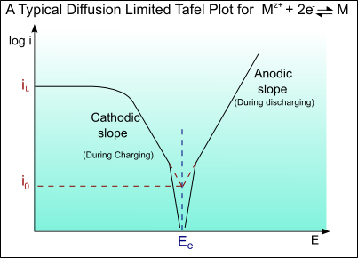
In a battery there are two sets of Tafel curves present, one for each material. During discharge one material will act as the anode and the other as the cathode. During charging the roles will be reversed. The actual potential difference between the two materials for a given current density can be found from the Tafel curve: The anodic potential, EA, and cathodic potential, EC, can be found from the curve. The total cell potential is the difference between the two.
On discharge, the potential is always less than thermodynamics alone predicts. It can be calculated by the equation:
\[V{'_{{\rm{cell}}}} = {E_C} - \left| {{\eta _C}} \right| + {E_A} - \left| {{\eta _A}} \right|\]
Upon discharge the cell potential may be further deceased by the Ohmic drop due to the internal resistance of the cell, r. Thus the actual cell potential is given by:
\[{V_{{\rm{cell}}}} = V{'_{{\rm{cell}}}} - iAr\]
where A = Geometric area relevant to the internal resistance.
Similarly on charging the potential is greater than thermodynamics alone predicts, and can be calculated by the equation:
\[V{'_{{\rm{charge}}}} = {E_C} - \left| {{\eta _C}} \right| + {E_A} - \left| {{\eta _A}} \right|\]
The cell potential may now be increased by the Ohmic drop, and the actual cell potential is given by:
\[{V_{{\rm{charge}}}} = V{'_{{\rm{charge}}}} + iAr\]
Primary batteries are not easily rechargeable, and consequently are discharged then disposed of. Many of these are “dry cells” – cells in which the electrolyte is not a liquid but a paste or similar. The cell electrochemical reactions are not easily reversible and cell is operated until the active components in the electrodes are exhausted. Generally primary batteries have a higher capacity and initial voltage than rechargeable batteries.
The table below demonstrates the properties of various primary batteries:
| System | Nominal Cell Voltage (V) | Capacity (Wh/kg) | Advantages | Disadvantages | Applications |
|---|---|---|---|---|---|
| Carbon/Zinc | 1.50 | 65 | Lowest cost; variety of shapes and sizes | Low energy density; poor low-temperature performance | Torches; radios; electronic toys and games |
| Mg/MnO2 | 1.60 | 105 | Higher capacity than C/Zn; good shelf life | High gassing on discharge; delayed voltage | Military and aircraft receiver-transmitters |
| Zn/Alk/MnO2 | 1.50 | 95 | Higher capacity than C/Zn; good low-temperature performance | Moderate cost | Personal stereos; calculators; radio; TV |
| Zn/HgO | 1.35 | 105 | High Energy density; flat discharge; stable voltage | Expensive; energy density only moderate | Hearing aids; pacemakers; photography; military sensors/detectors |
| Cd/HgO | 0.90 | 45 | Good high and low-temperature performance; good shelf life | Expensive; low energy density | |
| Zn/Ag2O | 1.50 | 130 | High Energy density, good high rate performance | Expensive (but cost effective) | Watches; photography; missiles; Larger space applications |
| Zn/Air | 1.50 | 290 | High Energy density; long shelf life | Dependent on environment; limited power output | Watches; hearing aids; railway signals; electric fences |
| Li/SOCl2 | 3.60 | 300 | High Energy density; long shelf life | Only low to moderate rate applications | Memory devices; standby electrical power devices |
| Li/SO2 | 3.00 | 280 | High energy density; best low-temperature performance; long shelf life | High-cost pressurized system | Military and special industrial needs |
| Li/MnO2 | 3.00 | 200 | High energy density; good low-temperature performance; cost effective | Small in size, only low-drain applications | Electrical medical devices; memory circuits; fusing |
This is commonly known as the Leclanché Cell and despite being the oldest type of primary battery it is still the most commonly used as it is very low-cost.
Georges Leclanché
The first cell was produced by Georges Leclanché in 1866 and was the first cell to contain only one low-corrosive fluid electrolyte with a solid cathode. This gave it a low self discharge in comparison to previously attempted batteries. The original cell consisted of a solid Zinc anode with an ammonium chloride solution as the electrolyte immobilized in the form of a paste (hence called a “dry cell”), and an 1:1 mixture of powdered carbon and manganese dioxide packed around a carbon rod acting as a cathode. In another version for extra heavy-duty applications, the electrolyte is zinc chloride mixed with a small amount of ammonium chloride. The most common variant is the alkaline cell where the electrolyte is potassium hydroxide.
Voltage: 1.5 – 1.75 V
Discharge characteristics: Generally sensitive to external factors. Generally very sloped. Better when discharged intermittently.
Service Life: 110 min (continuous use)
Shelf life: ~ 1 – 2 years (at room temperature)
The zinc/carbon cell uses a zinc anode and a manganese dioxide cathode; the carbon is added to the cathode to increase conductivity and retain moisture; it is the manganese dioxide that takes part in the reaction, not the carbon.
The overall reaction in the cell is:
Zn + 2MnO2 → ZnO + Mn2O3
The exact mechanism for this is complicated, and there is still controversy over the exact mechanism, however the approximate half-cell reactions are:
Anode: Zn → Zn2+ + 2e–
Cathode: 2NH4+ + 2MnO2 + 2e– → Mn2O3 + H2O + 2NH3
However, this is complicated by the fact that the ammonium ion produces 2 gaseous products:
2NH4+ + 2e– → 2NH3 + H2
These products must be absorbed in order to prevent build up of pressure in the vessel. This occurs by 2 mechanisms:
ZnCl2 + 2NH3 → Zn(NH3)2Cl2
2MnO2 + H2 → Mn2O3 + H2O
The cell has two basic designs: the cylindrical cell and the flat cell.
The zinc serves as both the container and the anode. The manganese dioxide/carbon mixture is wetted with electrolyte and shaped into a cylinder with a small hollow in the centre. A carbon rod is inserted into the centre, which serves as a current collector. It is also porous to allow gases to escape, and provides structural support. The separator is either cereal paste or treated absorbent kraft paper (the kind of brown paper used to make large envelopes or grocery bags).
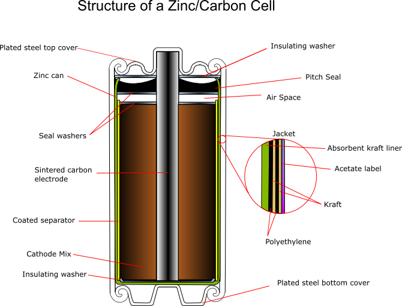
Carbon cathode
This is made of powdered carbon black and electrolyte. It adds conductivity and holds the electrolyte. The MnO2 to Carbon ratios vary between 10:1 and 3:1, with a 1:1 mixture being used for photoflash batteries, as this gives a better performance for intermittent use with high bursts of current. Historically the carbon black was graphite, however acetylene black is often used in modern batteries as it can hold more electrolyte.
Manganese dioxide
everal grades of MnO2 are available:
Electrolyte
A standard Leclanché cell uses a mixture of ammonium chloride and zinc chloride in aqueous solution. A zinc-corrosion inhibitor is also added, which forms an oxide layer. This inhibitor is usually mercuric oxide or mercurous chloride.
A typical electrolyte composition is:
| NH4Cl | 26.0% |
| ZnCl2 | 8.8 % |
| H2O | 65.2 % |
| Corrosion inhibitor | 0.25 - 1.0 % |
Carbon rod
This is inserted into the cathode and acts as a current collector. It also provides structural support and vents hydrogen gas that evolves as the reactions proceed. When raw the rods are very porous, so must be treated with waxes or oils to prevent loss of water, but remain porous enough to allow hydrogen to pass through. Ideally they should also prevent oxygen entering the cell, as this would aid corrosion of the zinc.
Separator
This can be either a gelled paste, or kraft paper coated with cereal. It physically separates the anode and the cathode, but allows ionic conduction to occur in the electrolyte.
Paste: The paste is flowed into the zinc can, and the carbon cathode inserted, forcing the paste up the sides of the can between the zinc and the cathode, where it sets.
Paper: The paper is coated with cereal, or another gelling agent, rolled into a cylinder and along with a circular bottom sheet is added to the can. The carbon cathode is added, and the rod inserted, pushing the paper against the walls of the cans. This compression releases some electrolyte from the cathode mix, soaking the paper.
As the paste is relatively thick, more electrolyte can be held by the paper than the paste, giving increased capacity, thus paper is usually the preferred separator.
Seal
This can be asphalt pitch, wax/resin mix, or plastic (usually polyethylene or polypropylene) An airspace is usually left between the seal and the cathode to allow for expansion. The function of the seal is to prevent evaporation of the electrolyte, and to prevent oxygen entering the cell and corroding the zinc.
Jacket
The jacket provides strength and protection, and will hold the manufacturers label. It contains various components, which can be metal, paper, plastic, mylar, cardboard (sometimes asphalt-lined) and foil.
Electrical contacts
These are the terminals of the battery, and are tin plated steel or brass. They aid conductivity and prevent exposure of the zinc.
This primary battery system has a higher capacity than the zinc/carbon cell. It has a very good performance at high discharge rates and continuous discharge and at low temperatures. The first modern alkaline cell was developed in the 1960s and by 1970 it was produced all over the world. Currently over 15 billion alkaline cells are used worldwide each year.
The active materials used are the same as in the Leclanché cell – zinc and manganese dioxide. However the electrolyte is potassium hydroxide, which is very conductive, resulting in low internal impedance for the cell. This time the zinc anode does not form the container; it is in the form of a powder instead, giving a large surface area.
The following half-cell reactions take place inside the cell:
At the anode: Zn + 2OH– → Zn(OH)2 + 2e–
Zn(OH)2 + 2OH– → [Zn(OH)4]2–
At the cathode: 2MnO2 + H2O + 2e– → Mn2O3 + 2OH–
For full discharge: MnO2 + 2H2O + 2e– → Mn(OH)2 + 2OH–
Overall: Zn + 2MnO2 → ZnO + Mn2O3
For full discharge: Zn + MnO2 + 2H2O → Mn(OH)2+ Zn(OH)2
It is not possible to describe the cathodic reaction on discharge in a simple unambiguous way, despite a lot of research. In fact the discharge curve has two fairly distinct sections corresponding to change in the oxidation state of Mn from +4 to +3 and then to +2 during the reduction of MnO2. The reality is more complicated than described in the two reactions shown above.
This cell is “inside out” compared to the Leclanché cell - the manganese dioxide cathode is external to the zinc anode, giving better diffusion properties, and lower internal resistance.
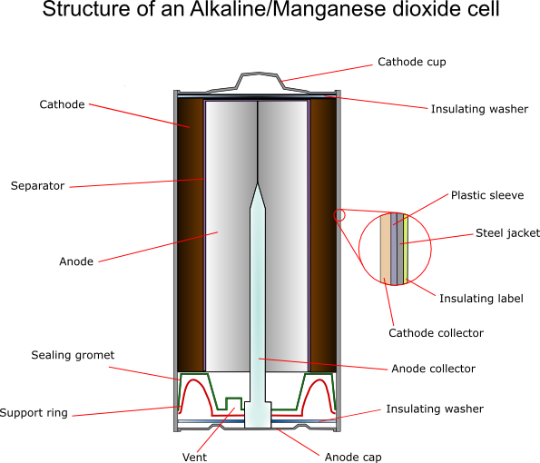
Cathode
For an alkaline cell electrochemically produced MnO2 must be used. The ore rhodochrosite (MnCO3) is dissolved in sulfuric acid, and electrolysis is carried out under carefully controlled conditions using titanium, lead alloys or carbon for the electrode onto which the oxide is deposited. This gives the highest possible purity, typically 92 ± 0.3%.
The cathode itself also contains around 10% graphite – more for more powerful batteries. A typical composition would be:
70% MnO2 (of which 10% is water);
~10% graphite;
1-2% acetylene black;
Balance: binding agents and electrolyte.
Zinc Anode
The zinc must be very pure (99.85 – 99.90%) and is produced by electroplating or distilling. Very small amounts of lead are sometimes added to help prevent corrosion (usually ~0.05%) The zinc is powdered by discharging a small stream of molten zinc into a jet of air “atomising” it. The powder contains particles between 0.0075 and 0.8 mm.
There are two methods of formation of the anodes from the powder:
Separators
These cells usually use “macro porous” separators. These are made from woven or felted materials.
The zinc/silver oxide batteries (first practical zinc/silver oxide primary battery was developed in the 1930’s by André; Volta built the original zinc/silver plate voltaic pile in 1800) are important as they have a very high energy density, and can deliver current at a very high rate, with constant voltage. However the materials are high cost, so it is limited to application in button cells, for use in calculators, watches hearing aids and other such applications that require small batteries and long service life.
Voltage: around 1.6 V, linearly dependent on temperature.
Discharge characteristics: Very good – flat discharge curve.
Service life: several thousand hours (continuous use).
Shelf life: several years (at room temperature).
The silver oxide used is usually in the monovalent form (Ag2O), as it is the most stable.
The following reactions take place inside the cell:
At the anode:
Zn + 2OH– → Zn(OH)2 + 2e–
At the cathode:
Ag2O + H2O +2e– → 2Ag + 2OH–
Overall:
Ag2O + H2O + Zn → 2Ag + Zn(OH)2
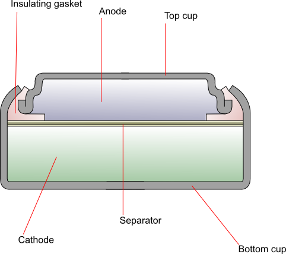
The cathode is generally composed of monovalent silver oxide with added graphite to improve conductivity. The anode is zinc powder mixed with a gelling agent, which is then dissolved in the alkaline electrolyte. The two are separated by a combination of layers of grafted plastic membrane, treated cellophane and non-woven absorbent fibres. The top cup (negative terminal) is made up of laminated layers of copper, tin, steel and nickel, and the bottom cup (positive terminal) is nickel-plated steel. An insulating gasket prevents contact between the two.
Secondary (rechargeable) batteries can be recharged by applying a reverse current, as the electrochemical reaction is reversible. The original active materials at the two electrodes can be reconstituted chemically and structurally by the application of an electrical potential between the electrodes to “inject” energy. These batteries can be discharged and recharged many times.
These fall into two categories:
(a) The battery is used as an energy storage device. It is constantly connected to an energy source and charged by it. It can then release the stored energy whenever needed, e.g. in
(b) The battery is used as a primary battery would be but is then recharged instead of being disposed of, e.g. in
The table below demonstrates the properties of various rechargeable batteries:
| System | Nominal Cell Voltage (V) | Capacity (Wh/kg) | Advantages | Disadvantages | Applications |
|---|---|---|---|---|---|
| Pb/Acid | 2.00 | 35 | Low cost; good high and low-temperature operation | Low cycle life; low energy density; poor charge retention | Cars; lawn mowers; aircraft |
| Ni/Cd | 1.20 | 30 | Good physical durability; good charge retention; good cycle life | High cost; memory effect | Aircraft; emergency power applications |
| Ni/Fe | 1.20 | 60 | Good physical durability; long cycling and standing life | Low power and energy density; high self discharge; high cost | Stationary applications; fork lift trucks |
| Ni/Zn | 1.60 | 27 | High energy density; low cost; good low-temperature performance | Poor cycle life | Electric scooters/bikes; military vehicles |
| Zn/AgO | 1.50 | 90 | Highest energy density; low self discharge; high discharge rate | High cost; low cycle life; low performance at low temperatures | Military equipment eg torpedo propulsion, submarines |
| Cd/AgO | 1.20 | 55 | High energy density; low self discharge; Good cycle life | High cost; low performance at low temperatures | Portable power tools; satellites |
| Ni/H2 | 1.40 | 55 | High energy density; good cycle life; can tolerate over charge | High initial cost; self discharge proportional to H2 pressure | Aerospace |
| Ag/H2 | 1.40 | 80 | High energy density; good cycle life | High cost - limited to military and aerospace applications | Aerospace |
| Li/Poly | up to 4.2 | 135 | High specific energy; good shelf life; moldable; non-volatile | High cost; expensive control methods needed for charge/discharge | Mobile phones |
The lead acid battery is the most used secondary battery in the world. The most common is the SLI battery used for motor vehicles for engine Starting, vehicle Lighting and engine Ignition, however it has many other applications (such as communications devices, emergency lighting systems and power tools) due to its cheapness and good performance.
It was first developed in 1860 by Raymond Gaston Planté. Strips of lead foil with coarse cloth in between were rolled into a spiral and immersed in a 10% solution of sulfuric acid. The cell was further developed by initially coating the lead with oxides, then by forming plates of lead oxide by coating an oxide paste onto grids. The electrodes were also changed to a tubular design.
Voltage: 2 V
Discharge characteristics: Generally quite curved, particularly at higher discharge rate. Best performance with intermittent discharge.
Service Life: Several years
The lead acid battery uses lead as the anode and lead dioxide as the cathode, with an acid electrolyte.
The following half-cell reactions take place inside the cell during discharge:
At the anode: Pb + HSO4– → PbSO4 + H+ + 2e–
At the cathode: PbO2 + 3H+ + HSO4– + 2e– → PbSO4 + 2H2O
Overall: Pb + PbO2 +2H2SO4 → 2PbSO4 + 2H2O
During the charging process, the reactions at each electrode are reversed; the anode becomes the cathode and the cathode becomes the anode.
Gassing
During charging, given the high voltage, water is dissociated at the two electrodes, and gaseous hydrogen and oxygen products are readily formed leading to the loss of the electrolyte and a potentially explosive situation. Sealed batteries are made safer by allowing the gases to recombine within the cell.
Sulfation
Under certain circumstances the lead sulfate products at both the electrodes achieve an irreversible state, making the recharging process very difficult.
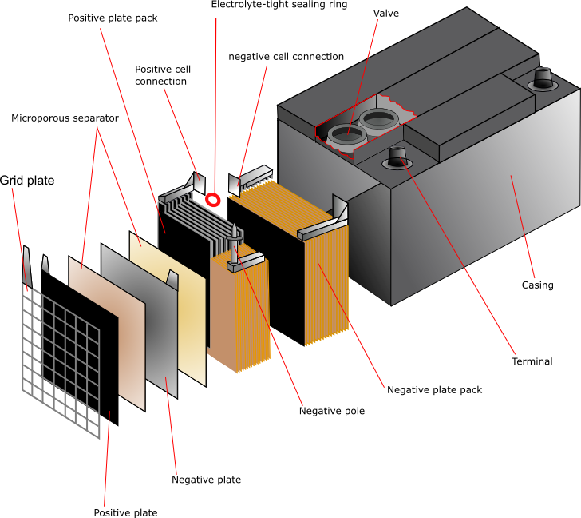
Lead
Pure lead is too soft to use as a grid material so in general the lead is hardened by the addition of 4 – 6% antimony. However, during the operation of the battery the antinomy dissolves and migrates to the anode where it alters the cell voltage. This means that the water consumption in the cell increases and frequent maintenance is necessary. There are two possible solutions to this problem:
(1) Using below 4% the battery water consumption is reduced, however it is then necessary to add small amounts of other elements such as sulfur, copper, arsenic and selenium. These act as grain refiners, decreasing the grain size of the lead and thereby increasing its hardness and strength.
(2) Alkaline earth metals such as calcium can be used to stiffen the lead. This is often used for telephone applications, and for no maintenance automotive batteries, since a more stable battery is required. A typical alloy would be 0.03 – 0.10% calcium and 0.5 – 1.0% tin (to enhance mechanical and corrosion properties).
The function of the grid is to hold the active material and to conduct electricity between the active material and the battery terminals. The design is a simple grid framework with a “tab” or “lug” for connection to the terminal post.
“Book mold” casting is the most common method of production for the grid. Permanent steel molds are made from blocks by machining. The molds are closed and filled with sufficient molten lead to fill the mold, leaving some excess to form a sprue, which is then removed by cutting or stamping. Grids can also be formed by mechanical working, either by cutting deep grooves into a sheet of steel, or by rolling up crimped strips and inserting them into holes in a cast plate, see Introduction to Deformation Processes TLP.
Lead Oxide
The lead can be oxidised by two processes: The Barton pot and the ball mill.
Red lead (Pb3O4) can also be added to the PbO formed by these methods, as it is more conductive. This is produced from PbO by roasting in a flow of air. This process would also increase the percentage of lead oxide in the material.
The oxide is mixed with water, sulfuric acid and a mixer, and then mixed to form a paste. It is then integrated with the grid by extrusion to form a plate. The paste is pressed by a machine into the interstices of the grid. They are partially dried, then stacked for curing. The curing process transforms the paste to a cohesive, porous solid. The most typical form of curing is “hydrosetting”: the grid is left at low temperature and humidity (25 – 40°C and 8 – 20% H2O) for between 24 and 72 hours.
Assembly
The simplest cell would consist of one cathode plate, one anode plate and a separator between them. In practice, most cells contain up to 30 plates with separators between. The separators are usually cellulose, PVC, rubber, microporous polyethylene or non-woven polypropylene. The plates are stacked and welded together. The tabs that are fixed to the plates are cast, then punched on between the layers and welded together. The plates are suspended inside the case, which is filled with electrolyte in order to activate it.
One of the main attractions of lithium as an anode material is its position as the most electronegative metal in the electrochemical series combined with its low density, thus offering the largest amount of electrical energy per unit weight among all solid elements. In many applications the weight of the battery is a significant percentage of the total weight, and there is great competition to make lighter batteries.
Li cannot be used with the traditional aqueous electrolytes due to the very vigorous corrosive reaction between Li and water with flammable hydrogen as the product. It took many years to develop a suitable electrolyte based on organic solvents with sufficient stability and ionic conductivity. Ionic conductivity is induced by dissolving a suitable Li salt in an organic solvent used in the form of a gel or immobilised within a polymeric separator. In the 1980s progress was made in the use of Li as an anode material with MnO2, liquid SO2 or thionyl chlorides as the cathode, and hexaflurophosphate dissolved in propylene carbonate as a typical organic electrolyte. Li cells are generally properly sealed against contact with air and moisture Whilst the primary lithium battery has been well established for nearly two decades, there have been many problems experienced whilst developing rechargeable lithium batteries, mainly due to the extreme reactivity of lithium, and they have only become widely available since mid 1990s.
Li-ion batteries are now used in very high volumes in a number of relatively new applications, such as in mobile phones, laptops, cameras and many other consumer products. The typical Li-ion cells use carbon as the anode and LiCoO2 or LiMn2O4 as the cathode. The first commercial Li-ion cell introduced by Sony in the 90's used a polymeric gel electrolyte, swollen by a high proportion of organic solvent for the Li salt. The translucent gel achieved a respectable ionic conductivity of 3×10-3 S cm-1 at 300 K.
In order to overcome the problems associated with the high reactivity of lithium, the anode material is not purely the metal, it is a non-metallic compound, e.g. carbon, which can store and exchange lithium ions. A lithium ion-accepting material, for example CoO2, is then used as the cathode material, and lithium ions are exchanged back and forth between the two during discharging and charging. These are called intercalation electrodes.
This type of battery is known as a “rocking chair battery” as the ions simply “rock” back and forth between the two electrodes.
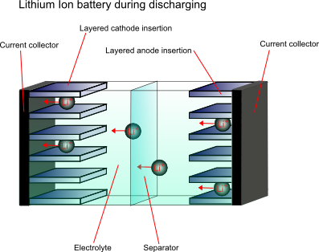
Cathode materials
The most common compounds used for cathode materials are LiCoO2, LiNiO2 and LiMn2O4. Of these, LiCoO2 has the best performance but is very high in cost, is toxic and has a limited lithium content range over which it is stable. LiNiO2 is more stable, however the nickel ions can disorder. LiMn2O4 is generally the best value for money, and is also better for the environment.
Anode material
The anode material is carbon based, usually with composition Li0.5C6. This lithium content is lower than would be ideal, however higher capacity carbons pose safety issues.
Electrolyte
Since lithium reacts violently with water, and the cell voltage is so high that water would decompose, a non-aqueous electrolyte must be used. A typical electrolyte is LiPF6 dissolved in an ethylene carbonate and dimethyl carbonate mixture.
After initial charging the following reactions take place upon discharge:
At the cathode: xLi+ + Mn2O4 + xe- → LixMn2O4
At the anode: LixC6→ xLi+ + 6C + xe-
Overall: LixC6 + Mn2O4 → LixMn2O4 + 6C
Another way of overcoming the high reactivity of lithium is to use a solid polymer electrolyte. Using lithium metal gives a higher energy density, higher cell potential and very low self discharge, so if the safety issues can be overcome, it would be the preferred anode material. Another problem to overcome is the high resistivity of the polymer electrolyte. One possible solution is to use the electrolyte as a very thin film to decrease the total resistance.
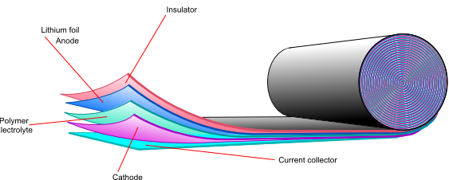
It is important to specify the exact steps taken when calculating the theoretical cell capacity and the maximum specific energy density of a given lithium cell. For full lithium utilisation, the cell capacity is 3860 mAh/g of lithium, simply calculated by Faraday’s laws. Thus, the actual rated capacity of the cell in mAh is determined by the weight of lithium in the cell. The actual specific capacity, on the other hand, is usually calculated as the actual rated capacity divided by the weight of lithium in the cell (and quoted as mAh/g of Lithium) or, less frequently, as the ratio of the rated capacity and the weight of the cell (and quoted as mAh/g of the cell). In a general case, the cell weight can be calculated as follows:
Calculating cell capacity and specific energy density.
In order to maximise the specific energy density, it is desirable to minimise the weight of the cell, while maximising the ratio of weight of lithium to the weight of the cell. For the Li-ion cell, for example, the theoretical stoichiometric value of the anodic multiplier (fA) is 10.3, while for the cathode (fC) is 25. Thus the maximum theoretical specific energy density for a max 4.2 V is calculated to be between 380 to 460 Wh/kg, depending upon whether the weight of the auxiliary components are taken into account.
The stoichiometric value for the carbon anode arises from the fact that lithium is intercalated into the carbon structural layers at the max possible molar ratio of 1 Li atom to 6C atoms giving rise to the limiting formula of LiC6. In practice, Li availability in the anode is only 50% of the theoretical maximum corresponding to the formula Li0.5-xC6 where x can vary from 0 (fully charged state) to 0.5 (fully discharged state). For the cathode, Li is intercalated into a perovskite structure of LiCoO2. Although it appears that, theoretically, the maximum ratio of Li to CoO2 is one, in practice the formula corresponds to Li0.5+xCoO2, where x=0 corresponds to the fully charged state and x=0.5 corresponds to the fully charged state. Thus the available capacities for both the anode and the cathode are more than halved, with the multipliers typically being, fA>21 and fC>50. The excess value arises from the weight of the binder and other additives. The operating voltage during discharge decreases from a max value of 4.2 to a cut-off value of 2.8 V, giving an average value of 3.35 V over the discharge cycle. The practical specific energy density is therefore in the region of 160 Wh/kg for a Li-ion cell.
The only practical method for increasing the specific energy density of a Li-ion cell is to decrease the weight of the auxiliary components of the cell. It is widely believed that with a considerable amount of research and development the maximum specific energy density that can be achieved for a Li-ion cell within the next five years will reach 220 Wh/kg of the cell.
The cycle life of Li-ion batteries are between 500 to 1000 cycles.
The following battery characteristics must be taken into consideration when selecting a battery:
1) Type
See primary and secondary batteries page.
2) Voltage
The theoretical standard cell voltage can be determined from the electrochemical series using Eo values:
Eo (cathodic) – Eo (anodic) = Eo (cell)
This is the standard theoretical voltage. The theoretical cell voltage is modified by the Nernst equation, which takes into account the non-standard state of the reacting component. The Nernstian potential will change with time either because of use or self-discharge by which the activity (or concentration) of the electro-active component in the cell is modified. Thus the nominal voltage is determined by the cell chemistry at any given point of time.
The actual voltage produce will always be lower than the theoretical voltage due to polarisation and the resistance losses (IR drop) of the battery and is dependent upon the load current and the internal impedance of the cell. These factors are dependent upon electrode kinetics and thus vary with temperature, state of charge, and with the age of the cell. The actual voltage appearing at the terminal needs to be sufficient for the intended application.
Typical values of voltage range from 1.2 V for a Ni/Cd battery to 3.7 V for a Li/ion battery.
The following graph shows the difference between the theoretical and actual voltages for various battery systems:
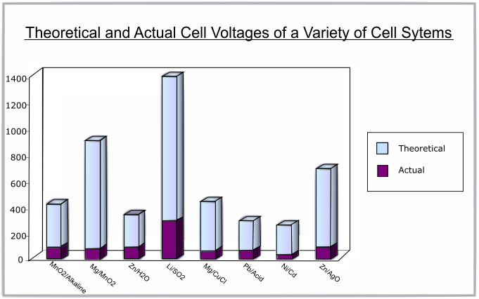
3) Discharge Curve
The discharge curve is a plot of voltage against percentage of capacity discharged. A flat discharge curve is desirable as this means that the voltage remains constant as the battery is used up.
4) Capacity
The theoretical capacity of a battery is the quantity of electricity involved in the electro-chemical reaction. It is denoted Q and is given by:
$$Q = xnF$$
where x = number of moles of reaction, n = number of electrons transferred per mole of reaction and F = Faraday's constant
The capacity is usually given in terms of mass, not the number of moles:
\[Q = {{nF} \over {{M_r}}}\]
where Mr = Molecular Mass. This gives the capacity in units of Ampere-hours per gram (Ah/g).
In practice, the full battery capacity could never be realised, as there is a significant weight contribution from non-reactive components such as binders & conducting particles, separators & electrolytes and current collectors & substrates as well as packaging. Typical values range from 0.26 Ah/g for Pb to 26.59 Ah/g for H2.
5) Energy density
The energy density is the energy that can be derived peer unit volume of the weight of the cell.
6) Specific energy density
The specific energy density is the energy that can be derived per unit weight of the cell (or sometimes per unit weight of the active electrode material). It is the product of the specific capacity and the operating voltage in one full discharge cycle. Both the current and the voltage may vary within a discharge cycle and thus the specific energy derived is calculated by integrating the product of current and voltage over time. The discharge time is related to the maximum and minimum voltage threshold and is dependent upon the state of availability of the active materials and/or the avoidance of an irreversible state for a rechargeable battery.
7) Power density
The power density is the power that can be derived per unit weight of the cell (W/kg).
8) Temperature dependence
The rate of the reaction in the cell will be temperature dependant according to theories of kinetics. The internal resistance also varies with temperature; low temperatures give higher internal resistance. At very low temperatures the electrolyte may freeze giving a lower voltage as ion movement is impeded. At very high temperatures the chemicals may decompose, or there may be enough energy available to activate unwanted, reversible reactions, reducing the capacity.
The rate of decrease of voltage with increasing discharge will also be higher at lower temperatures, as will the capacity- this is illustrated by the following graph:
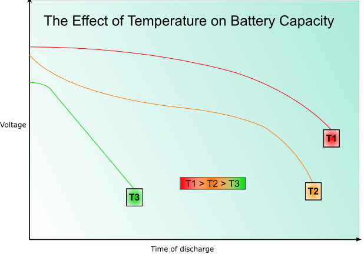
9) Service life
The battery cycle life for a rechargeable battery is defined as the number of charge/recharge cycles a secondary battery can perform before its capacity falls to 80% of what it originally was. This is typically between 500 and 1200 cycles.
The battery shelf life is the time a battery can be stored inactive before its capacity falls to 80%. The reduction in capacity with time is caused by the depletion of the active materials by undesired reactions within the cell.
Batteries can also be subjected to premature death by:
10) Physical requirements
This includes the geometry of the cell, its size, weight and shape and the location of the terminals.
11) Charge/Discharge cycle
There are many aspects of the cycle that need consideration, such as:
12) Cycle life
The cycle life of a rechargeable battery is the number of discharge/charge cycles it can undergo before its capacity falls to 80%.
13) Cost
This includes the initial cost of the battery itself as well as the cost of charging and maintaining the battery.
14) Ability to deep discharge
There is a logarithmic relationship between the depth of discharge and the life of a battery, thus the life of a battery can be significantly increased if it is not fully discharged; for example, a mobile phone battery will last 5-6 times longer if it is only discharged 80% before recharging.
Special deep discharge batteries are available for applications where this might be necessary.
15) Application requirements
The battery must be sufficient for the intended application. This means that it must be able to produce the right current with the right voltage. It must have sufficient capacity, energy and power. It should also not exceed the requirements of the application by too much, since this is likely to result in unnecessary cost; it must give sufficient performance for the lowest possible price.
The future of battery technology now lies in the concept of fuel cells. A fuel cell, like a battery is an electrochemical cell. It has an anode and a cathode, and an oxidation reaction and a reduction reaction occur, however the electrodes act as catalysts, and are not used up in these reactions. Instead, the reactions take place within a “fuel,” which provides the source for the electrons. This is a very efficient method of producing electricity (up to 85% efficient – that’s over three times as efficient as an internal combustion engine.) They are also very environmentally friendly – the most environmentally friendly cells produce only water and heat. At the moment the only disadvantage is that they are very costly, however it is very likely that in the future fuel cells will be the power source of choice for many applications.
For more information on Fuel cells, see the Fuel Cells TLP.
| Reaction | Eo (V) |
|---|---|
| Li+ + e– → Li | -3.10 |
| Na+ + e– → Na | -2.71 |
| Mg2+ + 2e– → Mg | -2.36 |
| ½H2 + e– → H– | -2.25 |
| Mn2+ + 2e– → Mn | -1.18 |
| MnO2 + 2H2O + 4e– → Mn + 4OH– | -0.98 |
| 2H2O + 2e– → H2 + 2OH– | -0.83 |
| Cd(OH)2 + 2e– → Cd + 2OH– | -0.82 |
| Zn2+ + 2e– → Zn | -0.76 |
| Ni(OH)2 + 2e– → Ni + 2OH– | -0.72 |
| Fe2+ + 2e– → Fe | -0.44 |
| Cd2+ + 2e– → Cd | -0.40 |
| PbSO4 + 2e– → Pb + SO42– | -0.35 |
| Ni2+ + 2e–→ Ni | -0.26 |
| MnO2 + 2H2O + 4e– → Mn(OH)2 + 2OH– | -0.05 |
| 2H+ + 2e– → H2 | 0.00 |
| Cu2+ + e– → Cu+ | +0.16 |
| Ag2O + H2O + 2e– → 2Ag + 2OH– | +0.34 |
| Cu2+ + 2e– → Cu | +0.34 |
| O2 + 2H2O + 4e– → 4OH– | +0.40 |
| 2NiOOH + 2H2O + 2e– → 2Ni(OH)2 + 2OH– | +0.48 |
| NiO2 + 2H2O + 2e– → Ni(OH)2 + 2OH– | +0.49 |
| MnO42– + 2H2O + 2e– → MnO2 + 4OH– | +0.62 |
| 2AgO + H2O + 2e– → Ag2O + 2OH– | +0.64 |
| Fe3+ + e– → Fe2+ | +0.77 |
| Hg2+ + 2e– → Hg | +0.80 |
| Ag+ + e– → Ag | +0.80 |
| 2Hg2+ + 2e– → Hg+ | +0.91 |
| O2 + 4H+ + 4e– → 2H2O | +1.23 |
| ZnO + H2O + 2e– → Zn + 2OH– | +1.26 |
| Cl2 + 2e– → 2Cl– | +1.36 |
| PbO2 + 4H+ + 2e– → Pb2+ + 2H2O | +1.47 |
| PbO2 + SO42– + 4H+ + 2e– → PbSO4 + 2H2O | +1.70 |
| F2 + 2e– → 2F– | +2.87 |
Cells using aqueous electrolytes are limited to under 2 V as water is decomposed at higher voltages. Thus Li batteries available in the 2.7 to 4 V use non-aqueous electrolyte. Typical non-aqueous electrolytes have higher impedance unless used as very thin films, eg lithium polymer battery or at higher temperatures.
Cut the potato in half and place the flat end on the foil. Push the copper coin into the potato. Attach crocodile clips to the coin and the foil, then wires to the crocodile clips. Now attach these wires to the voltmeter. The volt meter should give a reading, showing that the stored energy is available and a current can flow, and that you have produced a battery!
The potato contains a mild phosphoric acid (H3PO4), which acts as the electrolyte.
At the copper coin there are two reactions that could take place. If there is sufficient oxygen present, oxygen ions will be reduced to oxygen gas in the reaction
O2 + 4H+ + 4e– → 2O2– + 2H2O 1.23 V
If there is not sufficient oxygen, hydrogen ions from the acid are reduced to hydrogen gas in the reaction
H+ + e– → ½H2 0 V
At the foil aluminium metal is reduced to aluminium ions in the reaction
Al → Al3+ + 3e– 1.66 V
The total theoretical voltage across the potato cell is therefore 2.89 V in sufficient oxygen (Aluminium/air battery), or 1.66 V in insufficient oxygen (Aluminium/Hydrogen battery).
This also works with lemons, tomatoes, apples and other fruits!
Over the life time of the cell the morphology of the components will change, with effects that are detrimental to the functioning of the cell.
Eventually, the internal impedance and the self discharge will be so high that the battery is no longer usable.
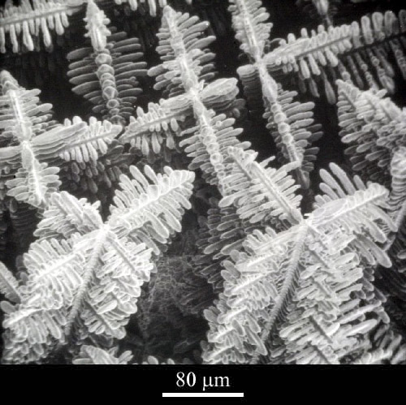
In some battery systems passivation may occur. Passivation is the process by which the reduced product that forms (often an oxide) does not dissolve into the electrolyte, or fall away from the electrode, but forms a film on the surface of the electrode instead. This can significantly impede the reaction as there is reduced electrical contact within the cell. This can substantially prolong the shelf life of the battery, however when the battery discharges the initial voltage may be lower than expected until the coating is broken. This is known as voltage delay.
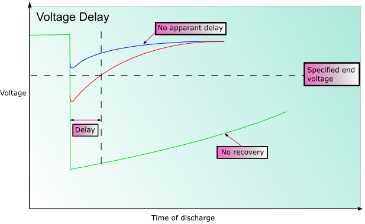
The exception to this is the nickel-cadmium battery, as subjecting them to partial discharge introduces “memory effects;” the battery appears to “remember” how much charge is being used, and will only recharge that amount rather than the full amount of charge.
In fact the repeated shallow charging causes the crystalline structure in the battery to change: the crystals in the cell grow larger, increasing the impedance and thus reducing its capacity.
The half-cell reaction for copper is:
Cu2+ + 2e- → Cu ; Eo = +0.34V
The exchange current density is io = 1 A m-2
For the Tafel equation:
\[\eqalign{ & \eta = a + b\log \left( i \right) \cr & {\rm{ }} = a + b\log \left( {{i \over {{i_o}}}} \right) \cr} \]
The Tafel slope is given by:
\[b = \pm 2.303\left( {{{RT} \over {\alpha ZF}}} \right)\]
Taking:
T = 300 K
α = 0.5
Z = 2
We get:
bA = 0.059 V/decade of current
and
bC = -0.059 V/decade of current
For the anodic curve: ηA = EA – Eo
EA = Eo + ηA
For the cathodic curve: ηC = EC – Eo
EC = Eo + ηC
The plot of this is shown on the diagram below:
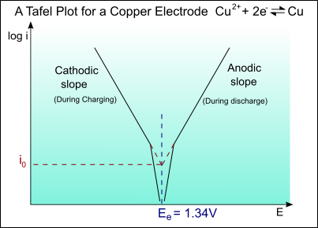
Wcell = wLi fA + wLi fC + waux
where
wLi is the weight (wt.) of lithium in the cell;
fA is the multiplier for the anode wt.;
fC is the multiplier for the cathode wt.;
waux is the auxiliary wt. of the cell (which includes the wt. of the electrolyte, separator, connectors etc. and typically comprises of 20% of the wt. of the active part of the cell).
Thus, as a first approximation:
Wcell ≈ 1.2 wLi (fA + fC)
And the specific capacity of the cell (as mAh/g of the cell wt.) is given by:
wLi 3860/1.2 wLi (fA + fC) = 3860/1.2 (fA + fC)
The specific energy density (which is energy density, E divided by the weight of the cell) is the product of the specific capacity and the operating voltage in one full discharge cycle. The values are often quoted for an average voltage and less frequently for the maximum voltage in the discharge sequence. For a constant current drain I, the specific energy density can be written as:
[ I wLi \(\int {V{\rm{d}}t} \) ] / wcell
The integration is carried out over the full specified discharge time. The specified discharge time is related to a maximum and a minimum voltage threshold value to allow for recharging the battery. Outside the threshold values, the battery may attain an irreversible state. The specific energy density (Wh/kg of the cell) is related to the specific capacity as follows:
Specific energy density = specific capacity × average operating voltage
= wLi 3860 / 1.2 wLi (fA + fC) Vave
= 3860 / 1.2 (fA + fC) Vave
Academic consultant: R. Vasant Kumar (University of Cambridge)
Content development: Emily Weal
Web development: Jin Chong Tan
This DoITPoMS TLP was funded by the UK Centre for Materials Education and the Department of Materials Science and Metallurgy, University of Cambridge.